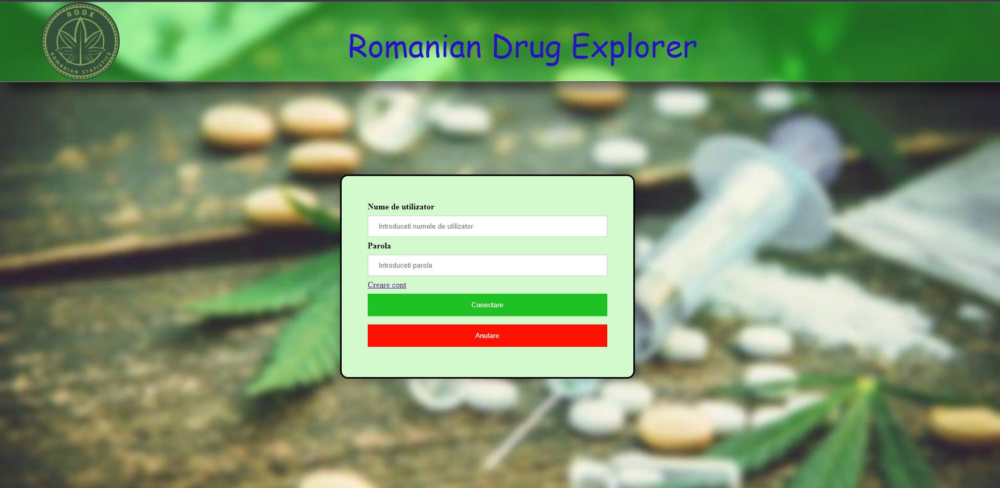

❃ Sidebar

❃ Filtre de căutare
Aplicația web "Romanian Drug Explorer" este o resursă cuprinzătoare de informații și statistici despre situația drogurilor în Romania, oferind utilizatorilor posibilitatea de a vizualiza datele în funcție de diverse criterii structurate sub forma unor grafice. Oferă o gamă largă de statistici privind consumul de droguri, inclusiv vârsta și sexul consumatorilor, tipurile de droguri consumate și bolile cauzate de abuzul de droguri.
Una dintre caracteristicile cheie de care utilizatorii se pot bucura este posibilitatea acestora de a-și personaliza căutările în funcție de interesele și nevoile lor. Aceștia pot filtra datele în funcție de diverse criterii pentru a obține o imagine mai detaliată și personalizată a tendințelor și statisticilor privind situatia drogurilor.
Limbajul HTML (HyperText Markup Language) este un limbaj care permite crearea de documente de tip hipertext, documente care vor fi utilizate și vizualizate prin paginile Web corespunzătoare. Utilizarea HTML oferă urmatoarele avantaje:
❃ este usor de asimilat și de utilizat;
❃ oferă un control total asupra elementelor utilizate în realizarea de pagini web;
❃ permite un grad înalt de reutilizare, astfel încât pentru realizarea unei pagini web se pot folosi cu succes secvențe de cod HTML de la alte pagini web realizate anterior;
❃ permite descrierea structurii documentelor fără a descrie organizarea în pagina a acestora;
❃ oferă o reprezentare proprie pentru fiecare navigator;
❃ permite reactualizarea documentelor HTML;
❃ produsul este independent de paltforma tehnică;
Sursa de informare: https://codeinstitute.net/global/blog/what-is-html-and-why-should-i-learn-it/
CSS (Cascading Style Sheets) este limbajul de stilizare pentru definirea modului de afișare a elementelor HTML, inclusiv culorile, aspectul și fonturile, făcând astfel paginile web prezentabile utilizatorilor. CSS oferă urmatoarele avantaje:
❃ consecvența;
❃ reducerea lațimii de bandă;
❃ motoarele de căutare apreciază CSS-ul;
❃ compatibilitatea browser-ului;
❃ opțiuni de vizualizare;
Sursa de informare: https://blog.hostx.ro/utile/ce-este-css-cascading-style-sheets/
Pentru stocarea datelor folosim SQLite. Aceasta este o bibliotecă în proces care implementează un motor de baze de date SQL tranzacțional , autonom , fără server , cu configurație zero. SQLite este cea mai răspândită bază de date din lume, cu mai multe aplicații decât putem număra, inclusiv mai multe proiecte de profil. De asemenea, este un sistem popular de gestionare a bazelor de date ce are urmatoarele avantaje:
❃ flexibilitatea;
❃ scrierea și citirea sunt mai eficiente într-o bază de date decât folosirea unor fișiere aflate pe disk;
❃ modul eficient de stocare a datelor in tabele;
❃ conținutul poate fi accesat si actualizat prin interogări SQL;
❃ actualizarea rapidă si ecifientă a conținutului;
Sursa de informare: https://sqlite.org/about.html
Chart.js este o bibliotecă JavaScript gratuită pentru realizarea de diagrame bazate pe HTML. Este una dintre cele mai simple biblioteci de vizualizare pentru JavaScript și vine cu următoarele tipuri de diagrame încorporate:
❃ Graficul de dispersie
❃ Diagramă cu linii
❃ Diagramă cu bare
❃ Graficul proporțiilor
❃ Graficul gogoșilor
❃ Diagrama cu bule
❃ Graficul zonelor
❃ Diagrama radar
❃ Grafică mixtă
Sursa de informare: https://www.w3schools.com/ai/ai_chartjs.asp
Node.js este un mediu de execuție JavaScript pe partea de server, iar principalul avantaj al acestei tehnologii este că dezvoltatorii pot folosi același limbaj de programare atât pentru front-end, cât și pentru partea de back-end a aplicației web, asupra căreia lucrează. Cateva dintre avantajele utilizarii limbajului JavaScript sunt:
❃ viteza;
❃ interoperabilitate;
❃ popularitate – JavaScript este peste tot pe web și odată cu apariția Node.js, este din ce în ce mai utilizat pe backend
❃ simplitate;
❃ interfețe bogate;
❃ funcționalitate extinsă;
❃ versatilitate;
Sursa de informare:
https://www.routech.ro/avantajele-si-dezavantajele-javascript/?utm_content=cmp-true
https://goit.global/ro/blog/ce-este-node-js/
Toate paginile au elementele principale comune astfel încât, la navigarea de pe o pagina pe alta, de la o secțiune la alta, userul să nu se simtă înstrăinat sau rătăcit și să reușească să se orienteze ușor în a găsi subiectul sau informația care i-a trezit interesul. Astfel, header-ul, fundalul și paleta de culori sunt aceleași pentru toate paginile.
Prima pagina cu care utilizatorul interacționeaza, este cea de conectare, oferindu-i posibilitatea de a se conecta sau de a naviga către pagina de creare a unui cont. Având în vedere, faptul că anumite acțiuni implică conectarea utilizatorilor, header-ul paginii de conectare este personalizat, astfel încat utilizatorul nu poate vizualiza meniul aplicației ci doar titlul si logoul "Romanian Drug Explorer".
Pagina "Creare cont" este asemănătoare cu cea de conectare oferindu-i utilizatorului posibilitatea de a-și crea un cont. Pașii necesari sunt introducerea unui nume de utilizator valid, apoi introducerea și confirmarea parolei.
Odată ce utilizatorul s-a conecta, aplicația web afișează pagina "Acasă". Aceasta joacă rolul de "copertă" a întregii aplicații. Începând cu această pagină, până în momentul deconectării, în cadrul header-ului se regăsește meniul alcătuit din urmatoarele butoane, care îl vor conduce pe utilizator pe paginile corespunzatoare: Acasă, Statistici, Despre, Organizare, Contact, Deconectare.
Conținutul acestei pagini constă într-un citat care reprezintă un îndemn pentru utilizatori referitor la subiectele aplicației web.
Pagina "Statistici" dispune de unde sidebar aflat în partea stângă, care include cele 5 subiecte despre care se pot vizualiza statistici din ultimii N ani. În body-ul acestei pagini, se regăsește un grafic general despre consumul drogurilor în rândul tinerilor.
Fiecărui câmp din cadrul sidebar-ului îi corespunde o altă pagină care conține în partea stangă o listă de filtre de unde utilizatorul poate selecta criteriile în funcție de care se va realiza graficul. Cele cinci tipuri de pagini conțin câte un câmp de filtrare personalizat și un buton "Aplicare filtre".
Pagina "Despre" aduce un plus de informație despre consumul drogurilor și caracteristicile aplicației pentru utilizatorii doritori să afle mai multe despre "Romanian Drug Explorer".
Pagina "Organizare" cuprinde informații despre angajații importanți ai organizației "Romanian Drug Explorer" cum ar fi studii, ani de experiență și mari realizări în cadrul specializării lor.
Pagina "Contact" cuprinde datele de contactare a echipei ce s-a ocupat de dezvoltarea aplicației web.
❃ Sidebar
❃ Filtre de căutare
https://sqlite.org/about.html
https://codeinstitute.net/global/blog/what-is-html-and-why-should-i-learn-it/
https://blog.hostx.ro/utile/ce-este-css-cascading-style-sheets/
https://www.moldova.org/5-motive-pentru-alege-css-web-design-de-la-exclusiv/
https://www.routech.ro/avantajele-si-dezavantajele-javascript/?utm_content=cmp-true
https://goit.global/ro/blog/ce-este-node-js/
https://www.w3schools.com/ai/ai_chartjs.asp